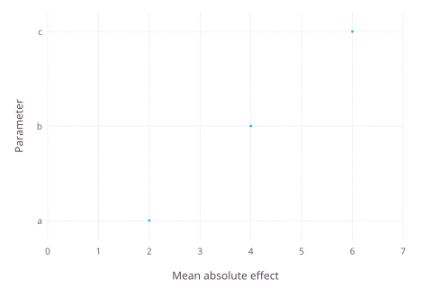
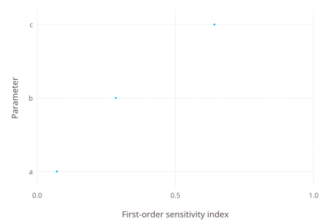
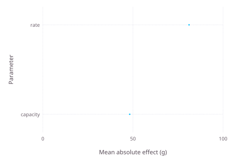

Sensitivity Analysis API
Sensitivity analysis asks how changes in model parameters affect an output. It does not calibrate the model or establish agreement with observations. Cropbox uses GlobalSensitivity.jl for Morris, Sobol, and eFAST analysis. For a short modeling workflow, start with the Sensitivity Analysis guide. The examples below cover method settings, result fields, units, multiple conditions, and failure cases.
using Cropbox, GlobalSensitivity, Random
@system SensitivityExample(Controller) begin
a => 0.5 ~ preserve(parameter)
b => 0.5 ~ preserve(parameter)
c => 0.5 ~ preserve(parameter)
sign => 1.0 ~ preserve(parameter)
response(a, b, c, sign) => sign * (a + 2b + 3c) ~ track
total(response) ~ accumulate
end
bounds = SensitivityExample => (; a = (0, 1), b = (0, 1), c = (0, 1))
result = analyze(SensitivityExample;
target = :total, parameters = bounds, stop = 2,
method = Morris(num_trajectory = 20), gsa = (; rng = Xoshiro(42)),
)
result.table| Row | config | target | system | parameter | lower | upper | means | means_star | variances |
|---|---|---|---|---|---|---|---|---|---|
| Int64 | Symbol | Symbol | Symbol | Float64 | Float64 | Float64 | Float64 | Float64 | |
| 1 | 1 | total | SensitivityExample | a | 0.0 | 1.0 | 2.0 | 2.0 | 4.38183e-27 |
| 2 | 1 | total | SensitivityExample | b | 0.0 | 1.0 | 4.0 | 4.0 | 5.30657e-27 |
| 3 | 1 | total | SensitivityExample | c | 0.0 | 1.0 | 6.0 | 6.0 | 6.66535e-27 |
The returned table can be plotted directly. Here the mean absolute Morris effects are 2, 4, and 6: over two hours, the full specified ranges of a, b, and c change the accumulated output by those amounts.
visualize(result.table, :means_star, :parameter;
backend = :Makie,
xlab = "Mean absolute effect", ylab = "Parameter",
xlim = (0, 7), ycat = unique(result.table.parameter),
legend = false,
)
The default form reads the final model state, even if the last saved snapshot is earlier. stop must be explicit: use stop = 0 for an initialized static model. Endpoint analysis avoids recording a full trajectory by default.
For a time-series summary, supply a function that returns one finite real scalar, optionally with units:
summary = analyze(df -> maximum(df.total), SensitivityExample;
target = :total, parameters = bounds, stop = 3, snap = 2u"hr",
method = Morris(num_trajectory = 20), gsa = (; rng = Xoshiro(42)),
)
summary.table| Row | config | target | system | parameter | lower | upper | means | means_star | variances |
|---|---|---|---|---|---|---|---|---|---|
| Int64 | Symbol | Symbol | Symbol | Float64 | Float64 | Float64 | Float64 | Float64 | |
| 1 | 1 | summary | SensitivityExample | a | 0.0 | 1.0 | 2.0 | 2.0 | 4.38183e-27 |
| 2 | 1 | summary | SensitivityExample | b | 0.0 | 1.0 | 4.0 | 4.0 | 5.30657e-27 |
| 3 | 1 | summary | SensitivityExample | c | 0.0 | 1.0 | 6.0 | 6.0 | 6.66535e-27 |
This callback receives a new DataFrame from each simulation, not a saved table. The model is rerun for every sampled parameter combination. Here the last recorded time is two hours, so the callback summarizes snapshots through that time, not the final state at three hours. Its output is named :summary. There is no general analyze(saved_df) interface: arbitrary stored runs do not necessarily have the sampling design required by a sensitivity method.
Methods and execution options
Use method = :morris, :sobol, or :efast for default method settings. For other settings, pass a native method object. Execution options are collected in gsa, separate from simulation options:
| Method | Constructor options | gsa options |
|---|---|---|
Morris(...) | num_trajectory, total_num_trajectory, len_design_mat, p_steps, relative_scale | rng |
Sobol(...) | order, nboot, conf_level | required samples; optional Ei_estimator |
eFAST(...) | num_harmonics | required samples; optional rng |
variance = analyze(SensitivityExample;
target = :response, parameters = bounds, stop = 0,
method = :efast, gsa = (; samples = 1024, rng = Xoshiro(42)),
)
variance.table| Row | config | target | system | parameter | lower | upper | S1 | ST |
|---|---|---|---|---|---|---|---|---|
| Int64 | Symbol | Symbol | Symbol | Float64 | Float64 | Float64 | Float64 | |
| 1 | 1 | response | SensitivityExample | a | 0.0 | 1.0 | 0.0713488 | 0.0730845 |
| 2 | 1 | response | SensitivityExample | b | 0.0 | 1.0 | 0.284894 | 0.287088 |
| 3 | 1 | response | SensitivityExample | c | 0.0 | 1.0 | 0.641202 | 0.643203 |
visualize(variance.table, :S1, :parameter;
backend = :Makie,
xlab = "First-order sensitivity index", ylab = "Parameter",
xlim = (0, 1), ycat = unique(variance.table.parameter),
legend = false,
)
For this additive response with equal independent uniform input ranges, the first-order variance contributions are approximately 1/14, 4/14, and 9/14. ST is close to S1 because there are no interactions. These dimensionless fractions are not the same measure as the Morris effects above.
samples is not a universal simulation budget: its interpretation and actual model-evaluation count depend on the method. Morris does not use it. Unsupported options, misspellings, and batch = true are rejected. The current adapter evaluates parameter sets sequentially. gsa.rng controls supported sampling methods; the separate seed keyword retains the model's usual instance semantics.
For a stochastic model, choose a repeatable model seed or an explicit replication strategy; uncontrolled simulation noise can confound parameter sensitivity.
Bounds define independent uniform inputs and must be finite, increasing pairs for continuous parameters. They are converted to the parameters' model units. Fixed values belong in config; integer parameters are not rounded into continuous samples. Sampling is normalized to [0, 1] before mapping to the physical bounds. Consequently, Morris effects describe changes per full specified input range and retain output units (squared for variances). relative_scale = true uses the native relative-effect definition and is dimensionless. Sobol and eFAST indices are dimensionless. Importance always depends on the chosen bounds. Affine outputs such as Celsius are converted to absolute units before numerical analysis; temperature effects are reported as differences in kelvin.
Conditions and returned results
Supply either one config or a list of configs. All conditions use the same sampled parameter combinations, but their outputs are not averaged. Multiple targets are also retained separately:
conditions = [SensitivityExample => :sign => s for s in (1, -1)]
separate = analyze(SensitivityExample;
target = [:response, :total], parameters = bounds,
configs = conditions, stop = 2,
method = Morris(num_trajectory = 20), gsa = (; rng = Xoshiro(42)),
)
separate.table| Row | config | target | system | parameter | lower | upper | means | means_star | variances |
|---|---|---|---|---|---|---|---|---|---|
| Int64 | Symbol | Symbol | Symbol | Float64 | Float64 | Float64 | Float64 | Float64 | |
| 1 | 1 | response | SensitivityExample | a | 0.0 | 1.0 | 1.0 | 1.0 | 1.09546e-27 |
| 2 | 1 | total | SensitivityExample | a | 0.0 | 1.0 | 2.0 | 2.0 | 4.38183e-27 |
| 3 | 2 | response | SensitivityExample | a | 0.0 | 1.0 | -1.0 | 1.0 | 1.09546e-27 |
| 4 | 2 | total | SensitivityExample | a | 0.0 | 1.0 | -2.0 | 2.0 | 4.38183e-27 |
| 5 | 1 | response | SensitivityExample | b | 0.0 | 1.0 | 2.0 | 2.0 | 1.32664e-27 |
| 6 | 1 | total | SensitivityExample | b | 0.0 | 1.0 | 4.0 | 4.0 | 5.30657e-27 |
| 7 | 2 | response | SensitivityExample | b | 0.0 | 1.0 | -2.0 | 2.0 | 1.32664e-27 |
| 8 | 2 | total | SensitivityExample | b | 0.0 | 1.0 | -4.0 | 4.0 | 5.30657e-27 |
| 9 | 1 | response | SensitivityExample | c | 0.0 | 1.0 | 3.0 | 3.0 | 1.66634e-27 |
| 10 | 1 | total | SensitivityExample | c | 0.0 | 1.0 | 6.0 | 6.0 | 6.66535e-27 |
| 11 | 2 | response | SensitivityExample | c | 0.0 | 1.0 | -3.0 | 3.0 | 1.66634e-27 |
| 12 | 2 | total | SensitivityExample | c | 0.0 | 1.0 | -6.0 | 6.0 | 6.66535e-27 |
The result is a named tuple with table and raw. The table includes the configuration index, output name, system, parameter, and physical bounds. Morris adds means, means_star, and variances; Sobol and eFAST add S1 and ST. raw preserves the original result, including requested Sobol interactions and confidence intervals. Raw matrix rows follow configuration order, then target order; columns follow parameter order. Raw magnitudes have been stripped of units for the numerical backend, while the table restores Morris units.
A growing model
For a time-dependent example, screen the maximum biomass reached in a small logistic growth model. The callback summarizes each newly simulated trajectory; the bounds vary growth rate and carrying capacity independently.
@system SensitivityGrowth(Controller) begin
rate => 0.2 ~ preserve(parameter, u"d^-1")
capacity => 100 ~ preserve(parameter, u"g")
mass(mass, rate, capacity) => rate * mass * (1 - mass / capacity) ~ accumulate(init = 1, u"g")
end
growth = analyze(df -> maximum(df.mass), SensitivityGrowth;
target = :mass, parameters = SensitivityGrowth => (; rate = (0.1, 0.3), capacity = (50, 150)),
config = Clock => :step => 1u"d", stop = 30u"d",
method = Morris(num_trajectory = 20), gsa = (; rng = Xoshiro(42)),
)
growth.table| Row | config | target | system | parameter | lower | upper | means | means_star | variances |
|---|---|---|---|---|---|---|---|---|---|
| Int64 | Symbol | Symbol | Symbol | Quantity… | Quantity… | Quantity… | Quantity… | Quantity… | |
| 1 | 1 | summary | SensitivityGrowth | rate | 0.1 d^-1 | 0.3 d^-1 | 81.1349 g | 81.1349 g | 3201.18 g^2 |
| 2 | 1 | summary | SensitivityGrowth | capacity | 50.0 g | 150.0 g | 48.2117 g | 48.2117 g | 1401.09 g^2 |
visualize(growth.table, :means_star, :parameter;
backend = :Makie,
xlab = "Mean absolute effect", ylab = "Parameter",
xlim = (0, 100), ycat = growth.table.parameter[sortperm(growth.table.means_star)],
legend = false,
)
The effects retain the output unit, grams, even though the parameters have different units. They compare changes over the whole specified input range, not equal physical increments. Their magnitudes and ranking depend on those bounds, the 30-day horizon, and the chosen summary. This small example demonstrates the workflow, not biological validation or sampling convergence.
Non-finite model outputs and empty callback data raise errors. A sampled output that is constant cannot yield variance-based indices; it is reported as an error rather than a misleading zero sensitivity. Failed runs are not silently discarded or replaced with other parameter samples.
GlobalSensitivity 2.12.9 has a known two-parameter eFAST frequency-design issue. Affected sample counts raise an explanatory error before model runs; Cropbox does not change the requested sample count. Morris or Sobol can be used instead. The native Sobol range interface also emits an upstream QuasiMonteCarlo design warning; Cropbox preserves that warning and does not silently substitute another design.
Cropbox.analyze — Function
analyze(S; target, parameters, stop, method=:morris, gsa=(), kwargs...)
analyze(f, S; target, parameters, stop, method=:morris, gsa=(), kwargs...)Analyze the sensitivity of a model's endpoint, or a scalar summary f(df) of each newly simulated DataFrame. Returns (table, raw) as a named tuple.
method accepts :morris, :sobol, :efast, or the corresponding GlobalSensitivity method object. Constructor options belong on that object; execution options belong in gsa, e.g. gsa = (; samples = 1024) for Sobol or eFAST, or gsa = (; rng = Random.Xoshiro(42)) for Morris. Unsupported execution options and batch evaluation are rejected rather than silently ignored.
parameters contains finite lower/upper bounds for independently varied, continuous parameters. Sampling uses a unit box mapped to those bounds, so Morris effects are per full parameter range, not per physical input unit. Morris effects retain output units; Sobol/eFAST indices are dimensionless. Parameter names are resolved against the model's participating systems and mixins, using the same validation as calibrate. Use a qualified name to select one of several same-named systems; :0 selects the root system. Dynamic child parameters are checked against their resolved types, with one warning if participation cannot be verified before sampling.
Use config or configs, not both. Every condition is evaluated at the same sampled parameter sets; conditions and targets remain separate in table. The raw output order is configuration first, then target, matching the table. The callback must return one finite real value, optionally with units; its output is named :summary. It receives a fresh DataFrame on every model run, not a previously stored trajectory. stop is required (stop = 0 for static models). Endpoint analysis reads the final model state even if snap omits it.
base, options, and seed follow simulate; other keywords are forwarded to simulate!. Endpoint analysis disables snapshots by default; callbacks retain the normal snapshot behavior. raw preserves the original GlobalSensitivity result, including interactions and confidence information not shown in table.